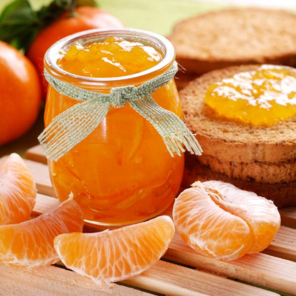
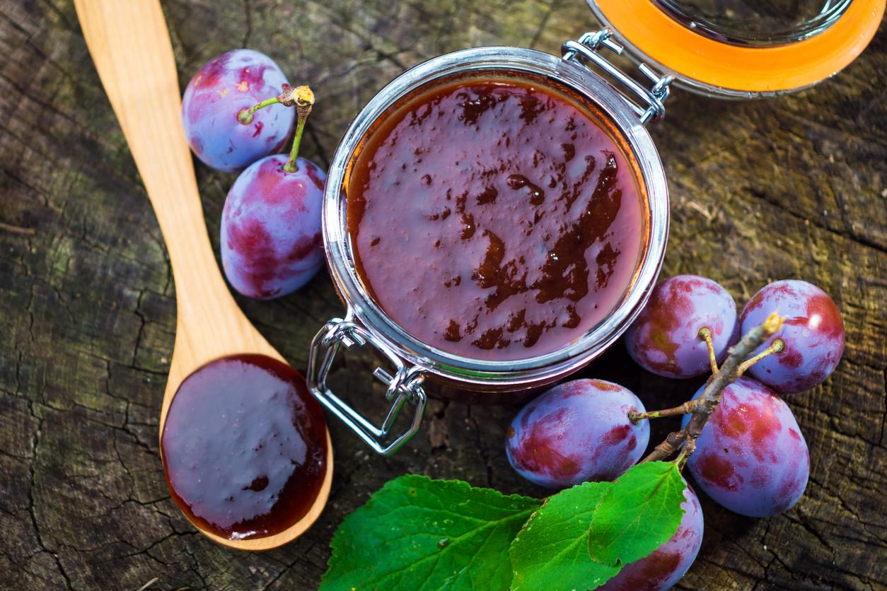

Pelar los tomates: realizar un corte en cruz en un extremo del tomate, ponerlo en agua hirviendo por 30 segundos, sacarlo y pasarlo por agua fría. Sacarle la piel. Cortarlos en trozos pequeños dejándoles las semillas y colocarlos en un bol. Sumarle el azúcar, la ramita de canela y el clavo de olor. Dejar reposar toda la noche o varias horas.
Colocar el contenido del bol en una olla de fondo grueso. Revolver cada tanto para que no se pegue al fondo. Cocción aproximadamente de 2 hs.
Colocar la mermelada aún caliente en los frascos, taparlos y darlos vuelta. Dejar enfriarlos para recién darlos vuelta. Conservar en lugar fresco y oscuro.

Mermelada de mandarina
Ingredientes
Rinde aproximadamente 6 frascos
Mandarinas 2 kg
Azúcar 600 g
Pelar las mandarinas y cortarlas por gajo, sacarle las semillas y las partes blancas. Cortar cada gajo en dos o tres partes. Poner las mandarinas en una cacerola y agregarle el azúcar, revolver. Tapar con film y dejar toda la noche o varias horas.
Colocar el contenido del bol en una olla de fondo grueso, agregarle la ralladura de tres mandarinas y una bolsita con semillas. Llevarlo a fuego suave hasta que rompa hervor, a partir de allí cocinar 30 m a fuego mínimo. Pasado este tiempo, mixear la mermelada y cocinar 15 m más.
Colocar la mermelada aún caliente en los frascos, taparlos y darlos vuelta. Dejar enfriarlos para recién darlos vuelta. Conservar en lugar fresco y oscuro. Si se desea pasteurizar para que dure más tiempo, colocar el frasco invertido en agua caliente y hervir 20 m más.

Mermelada de ciruela
Ingredientes
Rinde aproximadamente 4 frascos
Ciruelas 2 kg
Azúcar 600 g
Cortar las ciruelas con cáscara en trozos pequeños y colocarlas en un bol. Sumarle el azúcar. Dejar reposar toda la noche o varias horas.
Colocar el contenido del bol en una olla de fondo grueso y un paquetito con carozos de ciruelas. Llevarlo a fuego fuerte hasta que rompa hervor, bajar el fuego y dejar cocer. Revolver cada tanto para que no se pegue al fondo.
Colocar la mermelada aún caliente en los frascos, taparlos y darlos vuelta. Dejar enfriarlos para recién darlos vuelta. Conservar en lugar fresco y oscuro. Si se desea pasteurizar para que dure más tiempo, colocar el frasco invertido en agua caliente y hervir 20 m más.